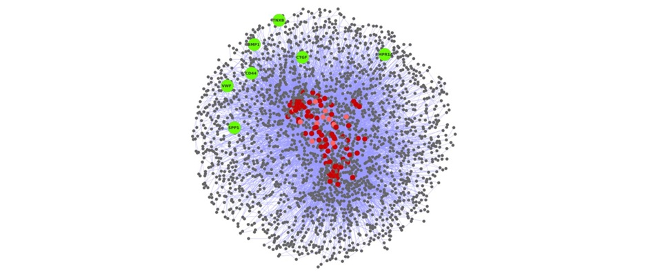

<!-- Page Content -->
<div class="container card" style="margin-top: 1em; min-height: 24em;">
  <div class="card-body">
    <h4 class="card-title">Disease Modeling</h4>

    <section id="content">
  
  <b>Modeling molecular interactomes underlying complex diseases</b> <br>
  Diseases such as cancers, asthma and diabetes are complex owing to the nature of interconnected underlying molecular mechanisms. We take a rational approach towards modelling these human diseases based on their empirically available data. Our work is rooted in the hypothesis that models of intricate networks of interactions and regulations of molecular mechanisms sufficiently encode necessary information of complex biological processes. We have worked on creating disease protein interactomes, their analysis and identification of targets specific to complex diseases with the ultimate goal of obtaining a set of refined leads of potential therapeutic value, using network biology and in silico drug discovery approach. We believe that our studies would be a valuable addition to the area of systems biology and network medicine.
  <br><br>
  
   <br> 

  <i><b>References:</b></i> 
  <ul>
  <li>Shikha Vashisht and Ganesh Bagler*, "An approach for the identification of targets specific to bone metastasis using cancer genes interactome and gene ontology analysis", PLoS ONE, 7(11): e49401 (2012).</li>
  <li>Vinay Randhawa and Ganesh Bagler*, "Identification of SRC as a potent drug target and its novel leads, for Asthma, using integrative approach of protein interactome analysis and in silico drug discovery", OMICS: A Journal of Integrative Biology, 16 (10), 512-526 (2012) </li>
  <li> Vinay Randhawa, Purnima Sharma, Shashi Bhushan and Ganesh  Bagler*, "Identification of key nodes of Type 2 Diabetes Mellitus protein interactome and study of their interactions with phloridzin", OMICS: A Journal of Integrative Biology, 17(6), 302-317 (2013). </li>
  <li>Shivalika Pathania, Vinay Randhawa, and Ganesh Bagler*, "Prospecting for novel plant-derived molecules of Rauvolfia serpentina as inhibitors of Aldose Reductase, a potent drug target for diabetes and its complications", PLoS ONE, 8(4): e61327 (2013). </li>
  </ul>
  
  </section>

  </div>
</div>
<!-- /.container -->